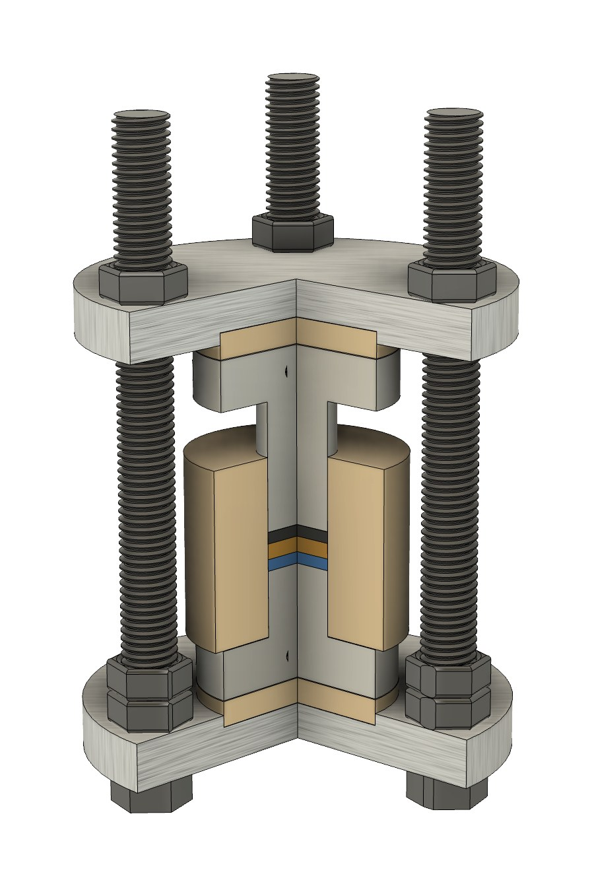

我們的研究整合材料合成、電化學工程與同步輻射分析技術。下列兩種電池化學體系，決定了我們要回答的問題；兩項分析技術，則是我們回答問題的方法。

全固態電池以固態電解質取代液態電解液，提升安全性，並有機會達到更高的能量密度，但也帶來新的挑戰：固–固界面。全固態電池多數的性能瓶頸都源自界面，這正是我們致力解決的問題。
研究重點
- 固態電解質界面工程：改善電解質與電極之間的接觸，降低界面阻抗。
- 硫化物固態電解質：具有高離子導電度，但與鋰金屬搭配時面臨穩定性問題。
- 複合正極設計：在活性材料、固態電解質與導電添加劑之間進行三相最佳化。
- 臨場界面分析：在充放電過程中直接觀察界面演變，而非僅依賴拆解後的事後分析。

無負極架構完全省去負極活性材料：鋰金屬於首次充電時直接原位沉積在集流體上。其優勢在於能量密度，挑戰則在於一切都取決於鋰能否均勻沉積並可逆地剝除。我們設計電池結構與電解質來實現這個目標，並實際觀察過程中發生了什麼。
研究重點
- 電池與集流體設計：開發可促進鋰均勻沉積與可逆剝除的表面與電解質。
- 失效模式解析：透過對稱與非對稱電池構型（Li‖Li、Li‖Cu、全電池），區分正極端的容量損失與負極端的死鋰及 SEI 生長。
- 鋰沉積形貌三維成像：以同步輻射斷層掃描追蹤循環過程中鋰沉積層的變化。
- 交互作用（cross-talk）效應：探討電解質分解產物在電池內遷移，如何改變失效機制。

即時觀察運作中的電池。我們自行設計電池，在同步輻射光束線進行實驗，並將光譜與電化學數據同步分析，讓化學變化與充放電曲線能夠對照解讀。
使用技術
- X 光吸收光譜（XAS）：解析循環過程中特定元素的氧化態與局部結構。
- X 光繞射（XRD）：即時追蹤晶相轉變與晶格應變。
- 電化學阻抗頻譜（EIS）：在頻率域區分界面反應與傳輸過程。
以非破壞方式取得運作中電池內部的三維影像。我們已將這項技術推進至軟包電池尺度，涵蓋樣品架設、光束線影像擷取、影像重建、影像分割，到定量形貌分析的完整流程。完整互動版請見英文頁面。
組裝後與循環後
微米矽（µ-Si）負極在組裝後與循環後的影像。拖曳分隔線即可比較。


解析重點
- 鋰金屬形貌：區分樹枝狀與緻密沉積，並跨循環進行定量。
- 裂紋與孔隙網絡：存在於固態電解質與複合正極中。
- 顆粒尺度損傷：循環後活性材料的破裂與接觸損失。
- 軟包電池尺度斷層掃描：將技術從鈕扣型電池樣品延伸至具商業應用價值的軟包電池。